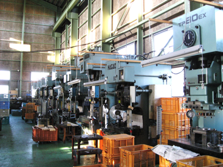

01
01段取りを覚える
型を替え、条件を合わせる。ここが一番の勘どころで、覚えるまでに時間がかかります。逆に言えば、覚えれば長く使える技術です。

分業が細かく分かれていないぶん、抜きから絞り、二次加工まで一通り見ることになります。手に職を、という言葉がそのまま当てはまる場所です。
機械が23台。人が11人。1台に1人が張り付く工場ではありません。段取りを組み、機械を回し、出てきたものを見る。その繰り返しです。
01型を替え、条件を合わせる。ここが一番の勘どころで、覚えるまでに時間がかかります。逆に言えば、覚えれば長く使える技術です。

0225トンから200トンまで。工程に合う機械を選んで通します。台数があるので、覚える機械の種類も多い。
 03
03割れていないか、しわが立っていないか、寸法が出ているか。目と手で分かるようになるまで、先にやっている人間が付きます。
手間がかかり、条件出しに時間がかかる。だから離れていった工場が多い。残っているところには、そのぶん仕事が集まります。
この技術は、機械が新しくなっても要らなくなりません。身に付ければ、どこへ行っても食える。そういう仕事です。

募集の有無、職種、勤務時間、待遇は、そのときどきで変わります。まず電話で聞いてもらうのが早いです。見学だけでも構いません。
0256-94-4417TEL｜採用のお問い合わせと伝えてください

できる・できないの見当は、その場で付きます。板厚、材質、数量、いつ要るか。この4つが分かれば、あとはこちらで組み立てます。